![]()
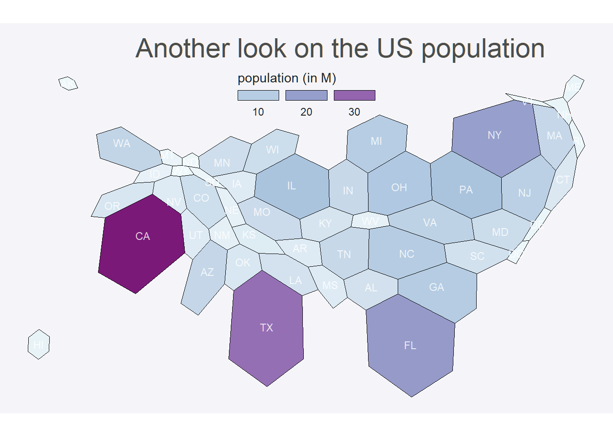
Focus-Glue-Context Fisheye Transformations for Spatial Visualization
Abstract
Fisheye views magnify local detail while preserving context, yet projection-aware, scriptable tools for R spatial analysis remain limited. mapycusmaximus introduces a Focus–Glue–Context (FGC) fisheye transform for numeric coordinates and sf geometries. Acting radially around a chosen center, the transform defines a magnified focus (r_in), a smooth transitional glue zone (r_out), and a fixed exterior. Distances expand or compress via a zoom factor and a power-law squeeze, with an optional angular twist that enhances continuity. The method is projection-conscious: lon/lat inputs are reprojected to suitable CRSs (e.g., GDA2020/MGA55), normalized for stable parameter control, and restored afterward. A geometry-safe engine (st_transform_custom) supports all feature types, maintaining ring closure and metadata. The high-level sf_fisheye() integrates with tidyverse, ggplot2, and Shiny, with built-in datasets and tests ensuring reproducibility. By coupling coherent radial warps with tidy, CRS-aware workflows, mapycusmaximus enables spatial exploration that emphasizes local structure without losing global context.
Introduction
Maps that reveal fine local structure without losing broader context face a persistent challenge: zooming in hides regional patterns, while small-scale views suppress local detail. Traditional solutions—insets, multi-panel displays, aggressive generalization—break spatial continuity and increase cognitive load (Cockburn, Karlson, and Bederson 2008). What if we could smoothly magnify a metropolitan core while keeping it embedded in its state-level context?
This package implements a Focus–Glue–Context (FGC) fisheye transformation that continuously warps geographic space. The transformation magnifies a chosen focus region, compresses surrounding areas into a transitional glue zone, and maintains stability in the outer context. The approach operates directly on vector geometry coordinates, preserves topology, and supports reproducible, pipeline‑oriented cartography within the R sf and ggplot2 ecosystem. An optional glue‑zone twist (the revolution parameter) can gently rotate features to aid continuity; in this paper’s figures we set revolution = 0.
The intellectual lineage of focus+context visualization traces back to Furnas (1986)’s degree-of-interest function, which introduced a formal method to rank information elements by combining intrinsic importance with distance from the user’s focus. In this model, items with low DOI are deemphasized or hidden, enabling emphasis on salient regions without losing global structure. Sarkar and Brown (1992) and Sarkar and Brown (1994) extended this to geometric distortion, demonstrating smooth magnification transitions for graph visualization. Subsequent innovations explored diverse lenses: hyperbolic geometry for hierarchies (Lamping, Rao, and Pirolli 1995), distortion-view frameworks (Carpendale and Montagnese 2001), and “magic lens” overlays (Bier et al. 1993). By 2008, Cockburn, Karlson, and Bederson (2008)’s comprehensive review synthesized two decades of research across overview+detail, zooming, and focus+context paradigms.
In cartography, the need for nonlinear magnification emerged independently. Snyder (1987) developed “magnifying-glass” azimuthal projections with variable radial scales—mathematical foundations. Harrie, Sarjakoski, and Lehto (2002) created variable-scale functions for mobile devices where user position appears large-scale against small-scale surroundings. An influential contribution came from Yamamoto, Ozeki, and Takahashi (2009) and Yamamoto et al. (2012): their Focus+Glue+Context model introduced an intermediate “glue” region that absorbs distortion, preventing the excessively warped roads and boundaries that plagued earlier fisheye maps. This three-zone architecture proved particularly effective for pedestrian navigation and mobile web services.
Within R’s spatial ecosystem, sf (Pebesma 2018) provides robust vector handling and CRS transformations, while ggplot2 (Wickham 2016) offers declarative visualization grammar. Yet a gap remained: existing tools addressed related distortion needs but not continuous geometric fisheye lenses. This package fills that niche by formalizing an sf-native FGC radial model with controllable zone parameters, optional angular effects, automatic normalization, and safe geometry handling across points, lines, and polygons.
Background
Before examining the mechanics of fisheye transformations, it is important to review how R’s spatial ecosystem currently addresses the detail-versus-context tradeoff. This context clarifies why existing solutions, though valuable, do not fully address the need for continuous lens-based warping.
Cartograms: Thematic distortion
The cartogram family (Gastner and Newman 2004) intentionally distorts geographic areas to encode variables—population density reshapes regions so area becomes proportional to demographic weight (see Figure @ref(fig:plot-cart)).
This approach fundamentally differs from focus+context methods. Cartograms substitute spatial accuracy for data encoding, often severely disrupting shapes and adjacencies. For example, a population cartogram enlarges Melbourne while shrinking Mornington, prioritizing thematic insight over geographic fidelity. In contrast, the FGC fisheye transformation preserves relative positions and topology while magnifying a user-selected spatial region rather than a data-driven variable. The use cases are distinct: cartograms address the dominance of a variable in space, whereas fisheye lenses facilitate exploration of local detail within a broader geographic context.
Hexagon tile maps: Discrete abstraction
Packages like geogrid and visualizations using sf::st_make_grid() replace irregular polygons with regular hexagonal or square tiles, each representing an administrative unit.
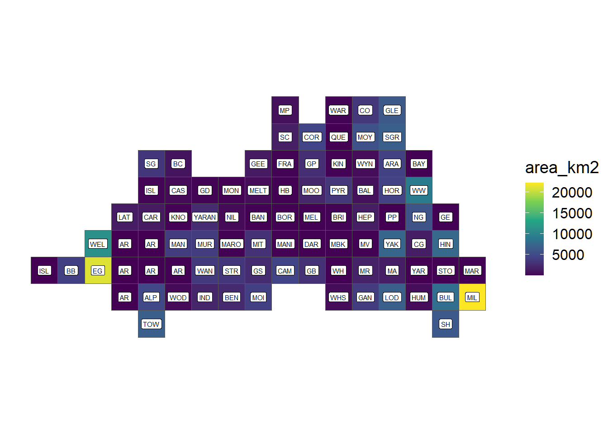
As seen in Figure @ref(fig:geo-grid-plot), tile maps abstract away precise geography entirely, treating space as a topology-preserving tessellation where “neighbors touch” matters more than accurate boundaries. Tile maps excel at avoiding size bias (Mildura gets equal visual weight to Yarra) and creating aesthetic, clutter-free layouts. However, they abandon continuous spatial relationships: you cannot identify precise locations, measure distances, or overlay point data meaningfully. Hexbin aggregation for point data (via ggplot2::geom_hex()) serves a different purpose—density estimation—rather than focus+context navigation.
Multi-panel approaches: Spatial separation
Tools like cowplot::ggdraw()(Wilke 2025) create side-by-side views: one panel shows overview, another shows zoomed detail (Figure @ref(fig:cow-plot-plot)).
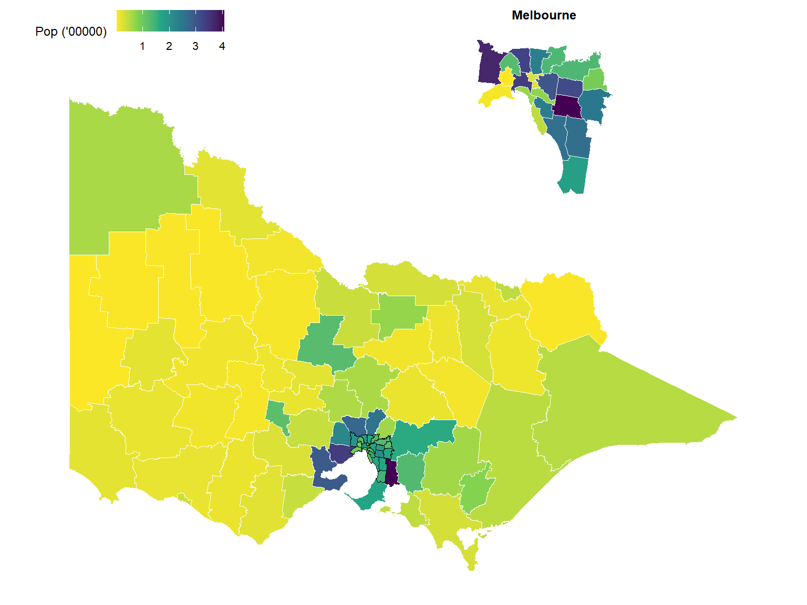
These are effective for static reports but require viewers to mentally integrate separate views, and they don’t preserve the embedded relationship between focus and context within a single continuous geography. Futhermore, if you introduce one or more elements into the plot like filling value equal to a variable, the audience will have a hard time identify the zoomed detail.
Why FGC fisheye offers something distinct
None of these approaches provide continuous geometric magnification within a single, topology-preserving map. Cartograms distort for data, not user-chosen focus. Tile maps abstract away geography. Multi-panel tools spatially separate context. The fisheye lens keeps everything in one frame—roads bend smoothly, metropolitan detail enlarges, but you still see how the city sits within its state. It’s a geometric warp rather than a data-driven substitution or panel-based separation. This matters for use cases like: examining hospital networks in Melbourne while maintaining Victorian context, exploring census tracts in a metro core without losing county boundaries, or analyzing transit lines with their regional hinterland visible.
With this landscape established, we now turn to the technical implementation: how does the FGC transformation actually work, and how does this package make it accessible within R’s spatial workflows?
Implementation
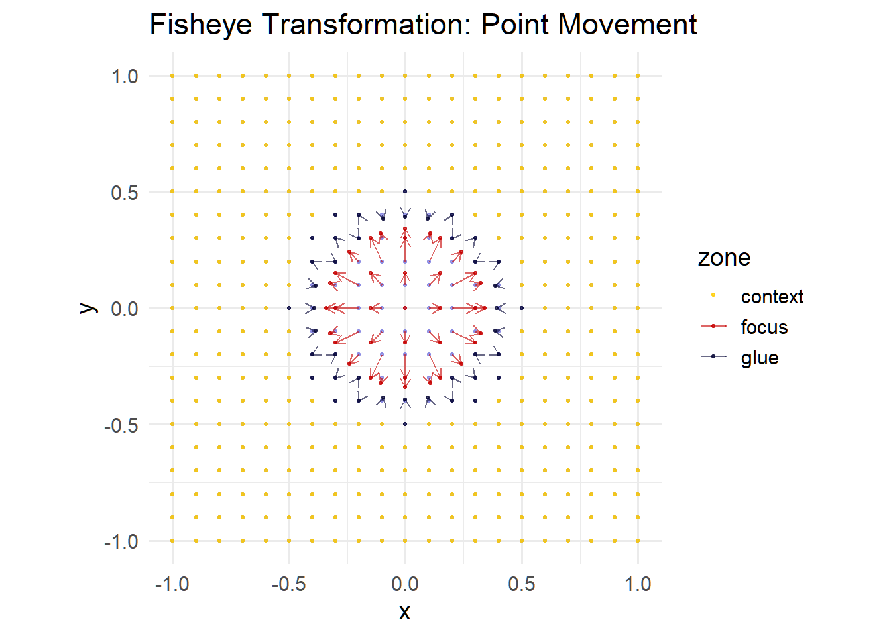
# Inspect diagnostics returned by fisheye_fgc()
head(transform_df[, c("x_new", "y_new", "zone", "r_orig", "r_new")])# A tibble: 6 × 5
x_new y_new zone r_orig r_new
<dbl> <dbl> <chr> <dbl> <dbl>
1 -1 -1 context 1.41 1.41
2 -0.9 -1 context 1.35 1.35
3 -0.8 -1 context 1.28 1.28
4 -0.7 -1 context 1.22 1.22
5 -0.6 -1 context 1.17 1.17
6 -0.5 -1 context 1.12 1.12table(transform_df$zone)
context focus glue
362 37 42 Consider a point (P = (x, y)) in a projected coordinate system. The analyst chooses a center (C = (c_x, c_y)) and two radii: (r_{}) delineating the focus region and (r_{}) marking the glue boundary. Points inside the focus magnify, points between the radii focus on the center and then compress according to a smooth curve, and points outside remain unchanged. This radial scheme keeps angular coordinates intact, thereby preserving bearings and relative direction.
Algorithm
Let \((r, \theta)\) denote the polar form of point \(P = (x, y)\) relative to center \(C = (c_x, c_y)\). The transformation defines a new radius \(r'\) via a piecewise function:
\[\begin{equation} r' = \begin{cases} \min\left( z \cdot r, r_{\text{in}} \right) & \text{if } r \le r_{\text{in}}, \\ r_{\text{in}} + (r_{\text{out}} - r_{\text{in}}) \cdot h(u; s) & \text{if } r_{\text{in}} < r \le r_{\text{out}}, \\ r & \text{if } r > r_{\text{out}}, \end{cases} \end{equation}\]
where (z > 1) is the zoom factor within the focus, (s (0, 1]) controls glue compression, and (u = { (r - r_{}) }/{ (r_{} - r_{}) }) normalises the glue radius to ([0,1]). The function (h(u; s)) is chosen so that (h(0; s) = 0), (h(1; s) = 1), and both the first derivatives and the radii match at the boundaries. We adopt a symmetric power curve:
\[\begin{equation} h(u; s) = \begin{cases} \tfrac{1}{2} \cdot u^{1/s} & \text{if } 0 \le u \le 0.5, \\ 1 - \tfrac{1}{2} \cdot (1 - u)^{1/s} & \text{if } 0.5 < u \le 1, \end{cases} \end{equation}\]
which compresses radii near both boundaries and emphasises the mid-glue region. Analysts seeking outward compression can choose alternative methods (e.g., the "outward" mode) that bias the curve towards (r_{}). The demonstration on how original and transformed radius can be seen at the Figure @ref(fig:radial-curve). The transform optionally introduces rotation within the glue zone to accentuate the flow from detail to context. Let ((u)) denote the angular adjustment. We employ a bell-shaped profile: ((u) = 4u(1-u)), where () is the revolution parameter (in radians). This function peaks at the glue midpoint and vanishes at the boundaries, ensuring continuity.
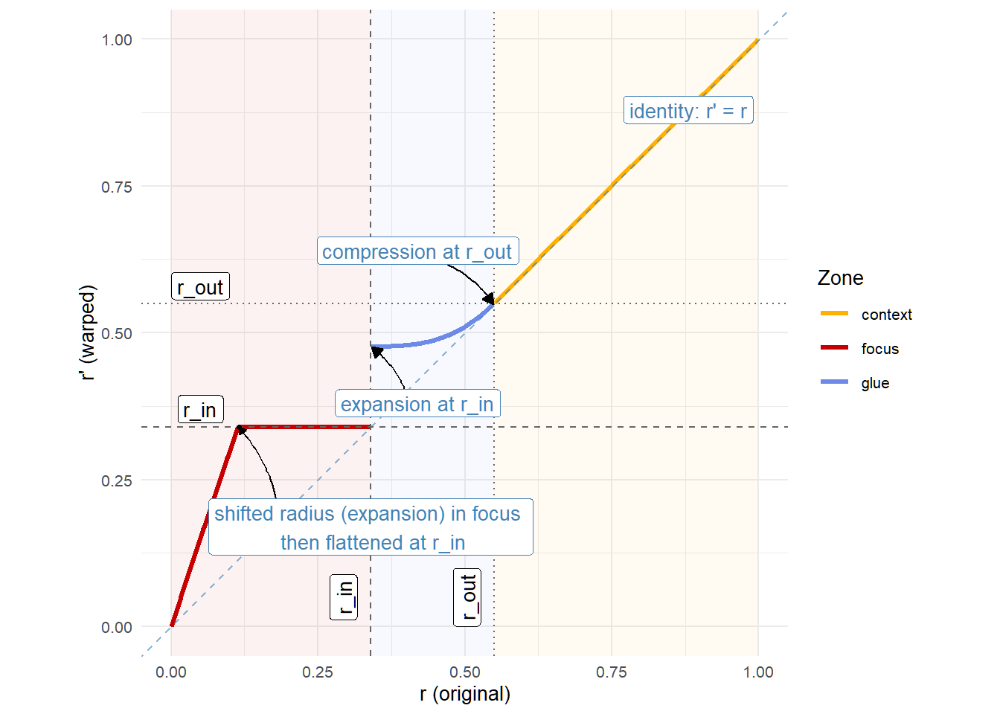
Integration with sf
Spatial datasets vary widely in CRS, extent, feature types, and schemas. mapycusmaximus follows a disciplined staged workflow where each step is explicit, auditable, and invariant to input type. The architecture separates numeric mapping, spatial orchestration, and geometry reconstruction, allowing the core transform to remain small and testable while sf-specific concerns are isolated in thin wrappers.
Workflow and CRS handling
The pipeline proceeds: sanitize input → select working CRS → normalize → warp → denormalize → restore original CRS. Empty geometries are dropped and sf::st_zm() enforces 2D coordinates.
CRS selection
If the layer is already in a projected CRS, that CRS is used. If it is geographic (lon/lat), the data are transformed to a sensible local projected CRS (e.g., UTM inferred from the centroid; for Victoria, GDA2020/MGA55 is typical). Distances are then in metres and parameters behave consistently. The original CRS is restored on return.
Normalization
Diagram of the normalization step
A bounding box defines the normalizing scale. With preserve_aspect = TRUE, a uniform scale \(s = \max(s_x, s_y)\) is applied; otherwise axes scale independently. Center resolution happens before normalization: sf/sfc centres reduce to a centroid then transform to the working CRS; numeric pairs with center_crs are transformed; numeric pairs without CRS are interpreted heuristically; with normalized_center = TRUE, pairs live in \([-1, 1]\) relative to the bbox midpoint. If no center is given, the bbox midpoint is used.
Core transformation
At the heart of the package is fisheye_fgc(), a vectorized function mapping an \(n \times 2\) coordinate matrix to a new \(n \times 2\) matrix via the FGC rule. Its contract is minimal: numeric arrays and scalar parameters defining center, radii, magnification, compression, method, and revolution. Internally it converts to polar form, applies the piecewise radial map with smooth boundary conditions, optionally perturbs angle via bell-shaped rotation, and converts back to Cartesian.
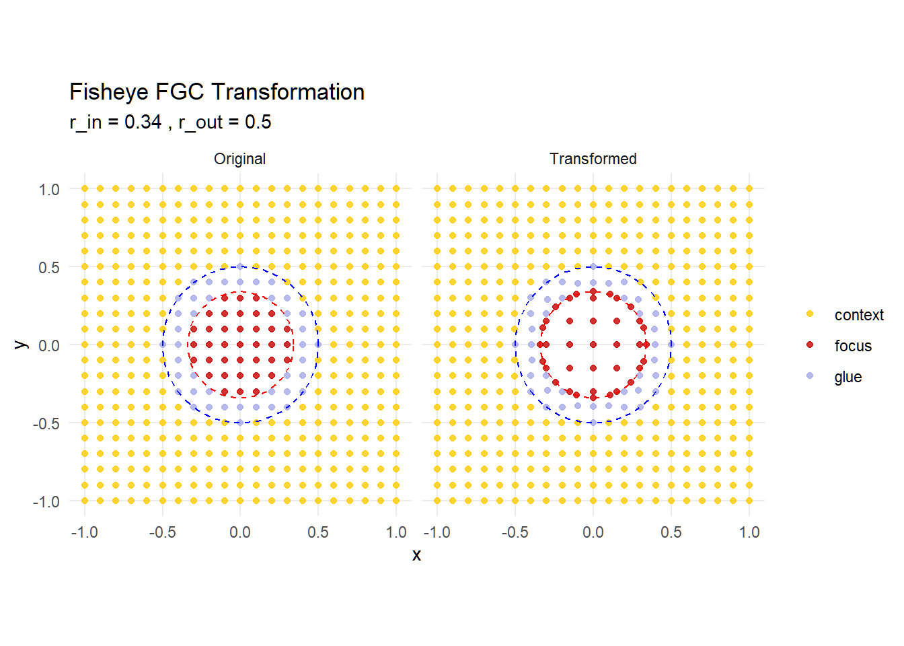
It attaches diagnostic attributes (zone labels, original and new radii) consumed by plotting utilities but not affecting geometry reconstruction.
x_new y_new
[1,] -1.0 -1
[2,] -0.9 -1
[3,] -0.8 -1
[4,] -0.7 -1
[5,] -0.6 -1
[6,] -0.5 -1[1] "dim" "dimnames" "zones" "original_radius"
[5] "new_radius" Numeric stability at zone boundaries is ensured by clamping expansions in the focus so radii do not exceed \(r_{in}\), and using smooth power curves in the glue so derivatives match across boundaries. The radial mapping is vectorized and runs in linear time in the number of vertices as seen in the benchmark @ref(fig:bench-plot).
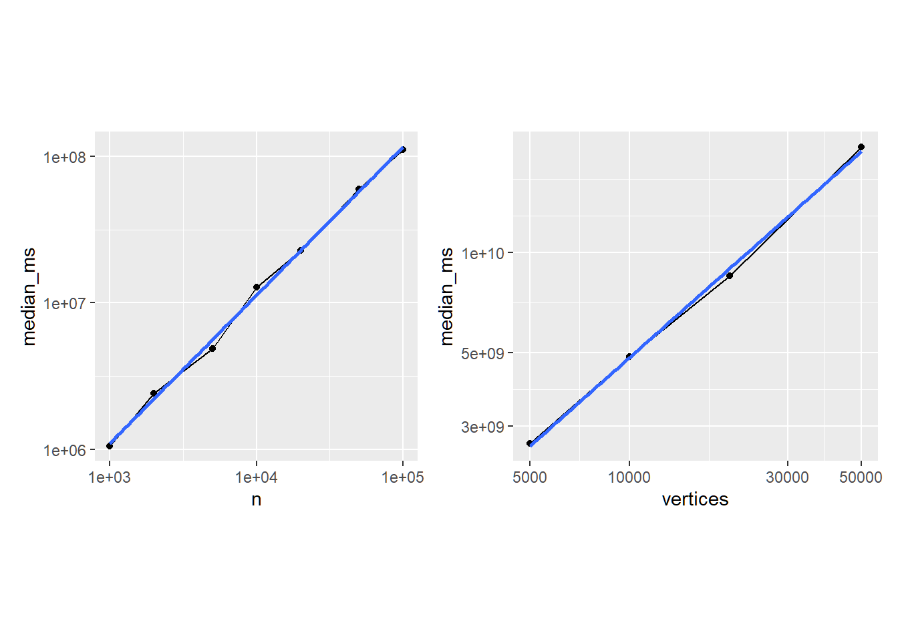
Geometry reconstruction
At the top level is an all-in-one function sf_fisheye(), which presents the user-facing interface while keeping the numeric core untouched. It validates input, selects working CRS, resolves center, constructs normalization closures, and invokes st_transform_custom() to rebuild geometries.
The geometry walker st_transform_custom() acts as a drop-in analogue to sf::st_transform() but applies an arbitrary coordinate function. For each feature, it extracts coordinates via sf::st_coordinates(), yielding a matrix with columns \((x, y, L1, L2, \dots)\) where L1 and L2 index polygon rings and multi-polygon parts. Geometries are split by type:
- POINT: direct warp
- LINESTRING: warp each vertex, retain order
- POLYGON: process each ring (identified by L1) independently
- MULTIPOLYGON: nested by (L1, L2) combinations
After transformation, polygon rings are explicitly closed by forcing first and last vertices to equality: \((x_1', y_1') = (x_n', y_n')\). This prevents numerical drift when the warp changes ring curvature. Geometries are rebuilt using sf constructors (st_point(), st_linestring(), st_polygon(), st_multipolygon()), combined into an sfc with original CRS, and spliced back into an sf if appropriate. Attributes are preserved because only the geometry column is replaced.
Table @ref(tab:transformation-table) illustrates coordinate transformations across zones for a vertical transect, showing radial expansion in the focus, smooth compression in the glue, and identity mapping in the context.
| x | y | x_new | y_new | zone | r_orig | r_new |
|---|---|---|---|---|---|---|
| -1.0 | -1 | -1.000 | -1.000 | context | 1.414 | 1.414 |
| -0.9 | -1 | -0.900 | -1.000 | context | 1.345 | 1.345 |
| -0.8 | -1 | -0.800 | -1.000 | context | 1.281 | 1.281 |
| -0.7 | -1 | -0.108 | -0.323 | focus | 0.316 | 0.340 |
| -0.6 | -1 | 0.000 | -0.340 | focus | 0.300 | 0.340 |
| -0.5 | -1 | 0.108 | -0.323 | focus | 0.316 | 0.340 |
| -0.4 | -1 | 0.000 | -0.500 | glue | 0.500 | 0.500 |
| -0.3 | -1 | -0.300 | -0.400 | glue | 0.500 | 0.500 |
| -0.2 | -1 | -0.200 | -0.400 | glue | 0.447 | 0.448 |
Design and extensibility
Utilities in utils.R provide create_test_grid() for diagnostics, classify_zones() for labeling, and plot_fisheye_fgc() for visualization. Dataset documentation in data.R accompanies example layers (vic, vic_fish, conn_fish) used in tests.
For multi-layer maps, the normal process is combine all the layers into a single sf object and apply sf_fisheye(), then split the result later. One minialist example for this approach is show in the code block below.
# Multi-layer example
bind <- dplyr::bind_rows(
object_1 |> dplyr::mutate(.layer="object_1"),
object_2 |> dplyr::mutate(.layer="object_2"))
bind_w <- sf_fisheye(
bind,
center = melb,
r_in = 0.34,
r_out = 0.55,
zoom = 1.8,
squeeze = 0.35)
object_1_transformed <- bind_w |>
dplyr::filter(.layer == "object_1") |>
dplyr::select(-.layer)
object_2_transformed <- bind_w |>
dplyr::filter(.layer == "object_2") |>
dplyr::select(-.layer)The test suite mirrors the modular structure, covering boundary behaviour, zone labeling, CRS round‑trips, ring closure, and performance. Functions follow tidyverse‑oriented conventions (snake_case parameters, small exported surface). Behaviour is validated by tests; we aim for stability across versions but do not promise guarantees.
Parameters
The principal user interface is sf_fisheye(), which accepts an sf or sfc object and returns an object of the same top-level class whose geometry has been warped in a projection- aware manner. For clarity, we group arguments into data/CRS handling, centre selection, and radial warping, and we make explicit the invariants enforced by the implementation.
Data and CRS. The argument sf_obj supplies the features to be transformed. Before any calculation, empty geometries are removed and Z/M dimensions are dropped using sf::st_zm(), so that downstream computation operates on a strict (n) coordinate matrix. The optional target_crs sets the working projected CRS; if provided, the input is transformed via sf::st_transform() and the original CRS is restored on return. When target_crs = NULL and the input is geographic (lon/lat), a projected working CRS is chosen deterministically from the layer’s centroid: the default value is GDA2020 /; otherwise a UTM zone is inferred by longitude and hemisphere. This choice ensures the fisheye operates in metric units with bounded distortion across the extent of interest. The preserve_aspect flag governs normalisation: with TRUE (default) a uniform scale (s = (s_x, s_y)) is applied, where (s_x, s_y) are bbox half-spans; with FALSE, independent scales are used per axis. Uniform scaling preserves circular symmetry of the focus and glue; per-axis scaling yields an ellipticalinterpretation that can be useful for long, narrow extents but should be used deliberately. Degenerate cases ((s_x = 0) or (s_y = 0)) are handled by substituting a unit scale to avoid division by zero.
Centre selection. The lens centre may be specified in several forms. The preferred interface is center, which takes precedence over legacy cx, cy. If center is a numeric pair and center_crs is provided (e.g., "EPSG:4326"), the point is transformed into the working CRS. If center_crs is omitted, a heuristic interprets pairs that lie within (||), (||) as WGS84 and transforms them accordingly; otherwise the values are assumed to be already in working-CRS map units. Any sf/sfc geometry may be used as center; non-point centres are combined and reduced to a centroid and then transformed to the working CRS, which is often convenient when the focal area is a polygon (e.g., a CBD boundary) or a set of points (e.g., incident locations). Finally, when the argument {normalized_center = TRUE}, center is interpreted as a pair in ([-1,1]) relative to the bbox midpoint and the chosen normalisation (uniform or per-axis). Normalised centres make parameter sets portable across datasets of different extents and are a natural fit for parameter sweeps in reproducible pipelines. If no centre is supplied, the bbox midpoint is used; this default is stable under reprojection.
Radial warping. The radii r_in and r_out define the focus and glue boundaries in the normalised coordinate space and must satisfy r_out > r_in. The interpretation of these radii depends on preserve_aspect. With uniform scaling, a circle of radius (r_{}) in unit space corresponds to a circle of radius (r_{},s) in map units; with per-axis scaling, the corresponding shape is an axis-aligned ellipse with semi-axes (r_{}s_x) and (r_{}s_y). Inside the focus, distances from the centre are multiplied by zoom_factor; to prevent overshoot, the implementation clamps (r’) so that points do not cross the (r_{}) boundary. Across the glue, squeeze_factor in \((0,1]\) controls how strongly intermediate radii compress: smaller values create tighter compression near the boundaries and a more pronounced “shoulder” in the middle of the glue; larger values approach a linear transition. The method selects the family of curves used in the glue. The default "expand" applies a symmetrical power law that expands inward and outward halves of the glue to maintain visual balance around the midpoint; "outward" biases the map towards (r_{}), keeping the outer boundary steadier and pushing more deformation into the inner portion of the glue. The optional revolution parameter adds a bell-shaped angular twist inside the glue of magnitude (,4u(1-u)), where (u) is the normalised glue radius. This rotation vanishes at both glue boundaries and peaks at the midpoint, preserving continuity. Positive values rotate counter-clockwise, negative values clockwise; values are specified in radians.
Inter-parameter interactions and invariants. The following constraints and behaviours are enforced: (r_{} > r_{} > 0); zoom_factor () (values close to one yield gentle focus); squeeze_factor in ((0,1]) ((=1) approaches linear); and monotonicity of the radial map so that ordering by distance from the centre is preserved. The choice of preserve_aspect affects the physical size of radii and thereby the impact of a given parameter set on different datasets; using uniform scaling with a normalised centre yields the most portable configurations. Twisting via revolution is confined to the glue; it does not change radii and therefore does not affect the classification of points into zones. Because angles are modified only in the glue, bearings inside the focus and in the context are preserved.
Return value and side effects. The function returns an object of the same top-level class as its input (sf or sfc). For sf inputs, non-geometry columns are preserved verbatim; only the geometry column is replaced. The original CRS is restored before return so that downstream plotting and analysis code does not need to change. On malformed geometries, the implementation emits a warning and returns an empty geometry of the appropriate family to preserve row count and indices. For exploratory diagnostics, the low-level fisheye_fgc() returns a coordinate matrix with attributes "zones", "original_radius", and "new_radius"; these can be used to plot scale curves and verify parameter effects prior to applying the transform to complex geometries.
Common choices
Although the parameter space is continuous, certain regimes recur in practice and can serve as reliable starting points. We describe these regimes and articulate the trade-offs that motivate each choice. The recommendations assume the default preserve_aspect = TRUE; when per-axis scaling is enabled, translate radii to semi-axes using the bbox half-spans.
Balanced metropolitan focus within a state. A common narrative emphasises a city region while retaining a recognisable state outline. Choose (r_{}) to enclose the urban footprint (often (0.300.35)) and (r_{}) to provide a broad glue buffer ((0.550.70)). A zoom_factor of (510) provides visible enlargement without overwhelming the transition.
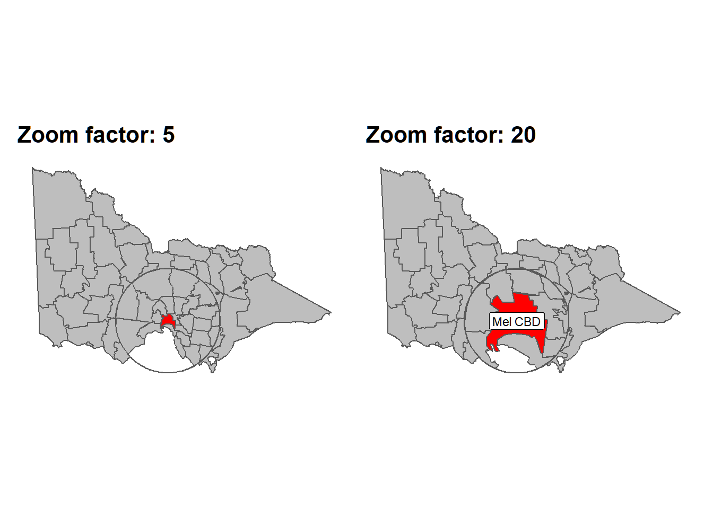
Pair this with A squeeze_factor of (0.30.5), which gently compresses surroundings while maintaining smoothness. The "expand" method yields a balanced appearance in which the mid-glue region visibly bridges detail and context. If preserving the outer coastline or boundary is paramount (e.g., for policy maps where the edge must remain stable), "outward" can be substituted to reduce outer drift at the cost of slightly stronger inner squeeze.
Dense line networks and flows. When the layer of interest is line-heavy (transport corridors, flows, hydrology), kink introduction and overplotting are the primary risks. Reduce glue compression and avoid large twists: squeeze_factor \ge 0.35 (ideally (0.400.60)) coupled with revolution \le 0.2 radians keeps linework legible while still communicating focus. The "expand" method is generally preferable because its symmetric treatment of the glue reduces inflections near (r_{}) and (r_{}). When in doubt, plot a radius-vs-radius diagnostic from fisheye_fgc() to confirm that the derivative remains near one at boundaries.
Polygon-dominated maps and choropleths. For administrative regions, land-use parcels, or other polygon-dense layers, slightly stronger compression in the glue is tolerable because viewers rely on silhouette and adjacency rather than precise edge angles. Settings such as {squeeze_factor = 0.25\text{ - }0.40} with zoom_factor = 5\text{ - }20} and either "expand" or "outward" often work well.
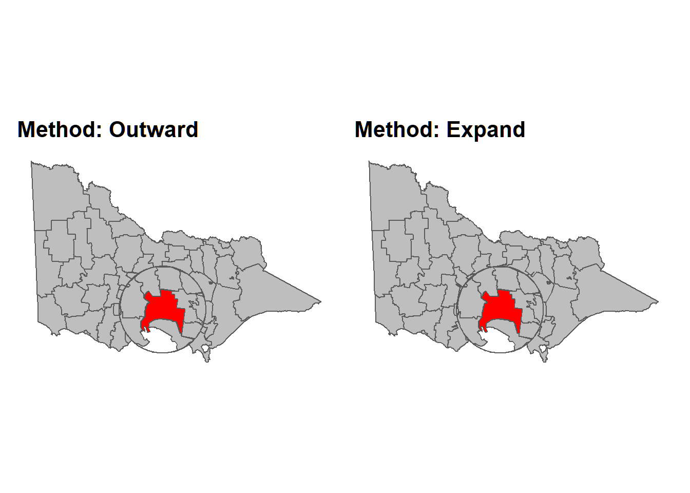
We recommend revolution = 0 for publication unless the swirl is part of the intended rhetoric; twists, while visually engaging, can distract from choropleth encoding and complicate legend interpretation.
Small multiples and parameter sweeps. Analysts frequently compare scenarios across maps (e.g., different thresholds or temporal slices). Portability of parameters is maximised by using a normalised centre (normalized_center = TRUE) with preserve_aspect = TRUE. This yields consistent radii across datasets of different extent and makes small multiples directly comparable.
A pattern that works well is to fix (r_{}, r_{}) and squeeze_factor, and vary zoom_factor over a short range (e.g., (1.3, 1.6, 2.0)). Faceting these outputs produces a transparent narrative of how emphasis changes with magnification.
Choosing radii from map scale. When stakeholders communicate distances in kilometres or miles, convert desired physical radii to unit radii using the bbox half-span. With {preserve_aspect = TRUE}, (r_{} = d/s) where (d) is the intended focus radius in map units (metres for metric projections) and (s) is the larger half-span of the bbox.
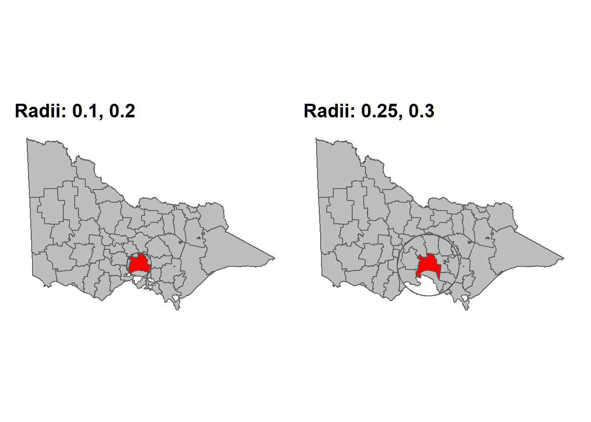
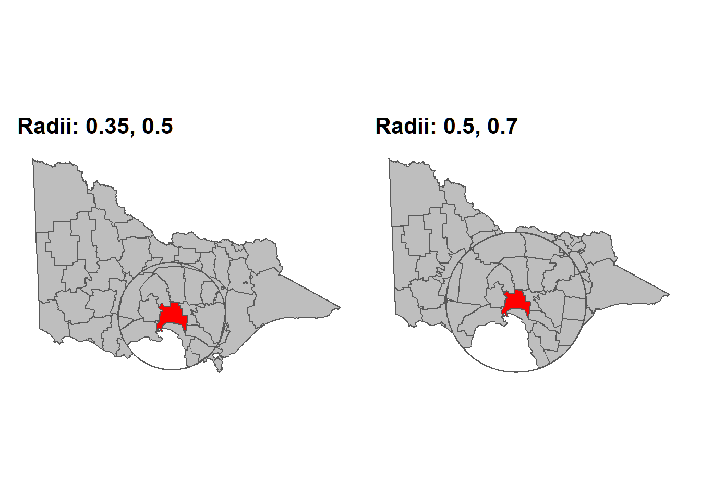
This rule allows quick calibration: for a state with half-span 250 km, a desired 75 km focus corresponds to (r_{} ). For per-axis scaling, choose semi-axes independently: (r_{} = d_x/s_x), (r_{} = d_y/s_y), noting that the current implementation interprets (r_{}) as a single scalar and therefore realises an ellipse only through preserve_aspect = FALSE.
Centres for reproducibility. To avoid ambiguity in collaborative settings, prefer specifying center either as an sf geometry (whose CRS is explicit) or as a lon/lat pair with center_crs = "EPSG:4326". Numeric pairs without CRS are accepted but rely on heuristics. When the focal area is itself a polygon or multi-polygon, passing that object as center ensures the centroid is derived from the same dataset used for the map, improving reproducibility and intent.
CRS considerations. Leaving target_crs = NULL suffices for most lon/lat inputs because the working CRS is chosen deterministically. Projects that maintain a standard grid (e.g., local government dashboards) should specify target_crs to improve cross-report comparability. Avoid switching working CRS between layers that will be overlaid; doing so changes the meaning of normalised radii and will misalign warps.
Publication vs. exploration. For exploratory notebooks and talks, small nonzero revolution values (() radians) can help audiences perceive continuity across the glue.
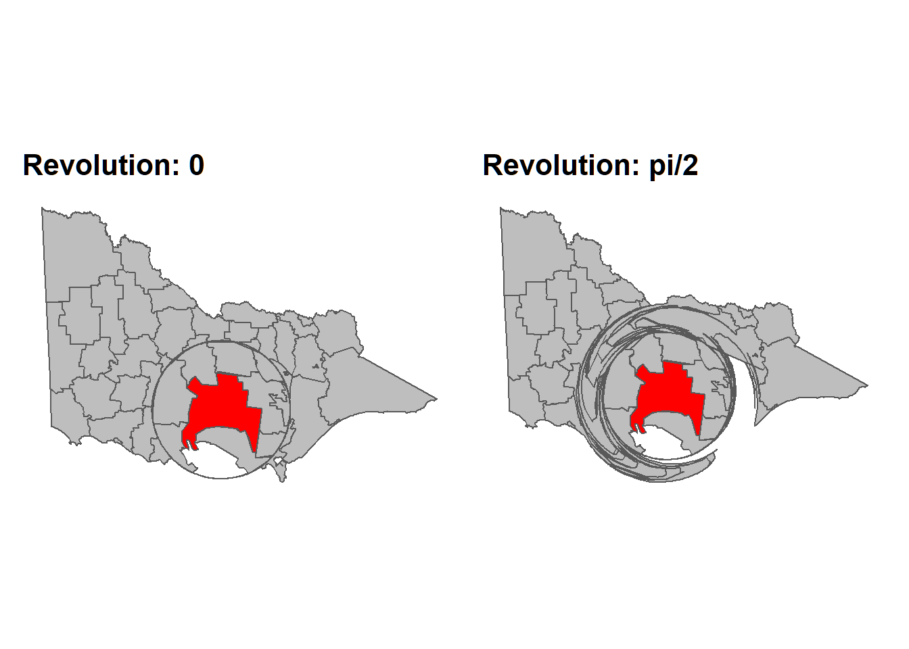
For manuscripts and dashboards, prefer revolution = 0. Similarly, start with "expand" and adopt "outward" only when outer stability is an explicit requirement. Always annotate or at least describe the distortion in figure captions so readers do not mistake warped areas for standard projections.
Examples of use
We present the applied scenario to illustrate how the FGC fisheye clarifies local structure while retaining geographic context. We will uses Victorian hospital-RACF to demonstrate overplotting relief and alignment across multiple layers.

As shown in Figure @ref(fig:hospitals-basic-plot), standard maps of hospital and RACF locations quickly become cluttered in metropolitan Melbourne. Points occlude one another, and the relationship between facilities is difficult to assess. The simple pair of small-scale views indicates relative counts (many RACFs, fewer hospitals) but masks local proximity patterns and neighbourhood coverage.
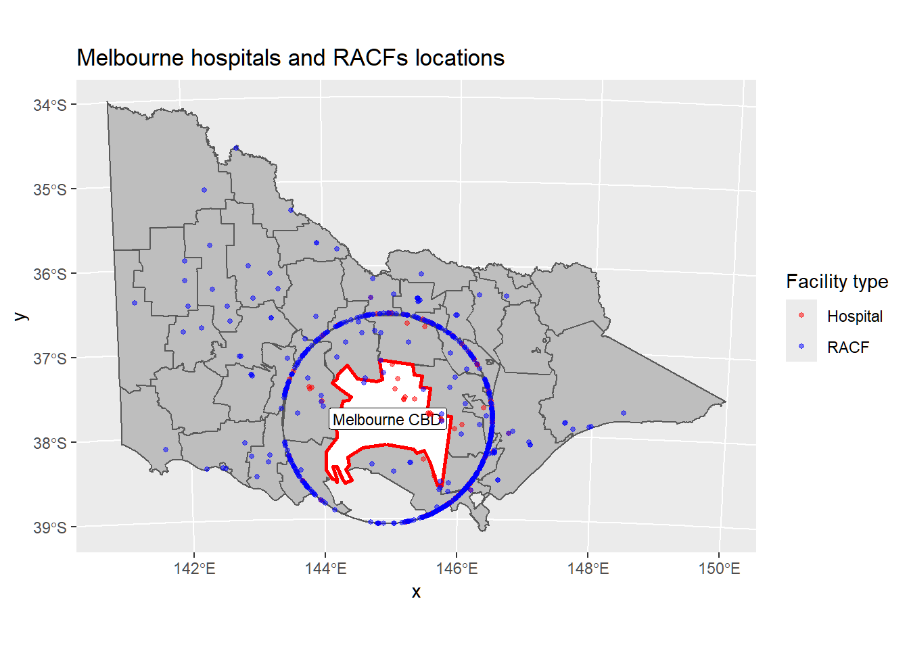
Applying the fisheye to both features (points) and boundaries with a common centre (the MELBOURNE polygon) and shared parameters (zoom = 20, squeeze = 0.3, method = “expand”) yields a single, continuous map in which the Melbourne LGA is magnified while the rest of Victoria remains readable. Because all layers undergo the same warp, overlays remain aligned. The result improves visual separation of facilities and reveals local hub structures without resorting to insets. All computations on attributes remain valid—the geometry is warped for display, but feature identity, CRS metadata, and table structure are preserved. As with any lens, distances and areas inside the focus and glue are not metric and should not be used for quantitative spatial inference.
Discussion
Contribution mapycusmaximus provides an sf‑native implementation of the FGC fisheye that is projection‑aware, parameterised in normalised units, and safe across points, lines, and polygons. The package separates radial mapping from geometry orchestration, exposes explicit controls over focus, glue, and context, and preserves attributes and CRS invariants for reproducible pipelines with ggplot2.
Relation to alternatives Unlike cartograms (thematic distortion), hex/regular tile maps (discrete abstraction), or inset/multi‑panel layouts (spatial separation), the FGC lens delivers continuous magnification within a single map while preserving topology and bearings. This reduces cognitive load for readers who must relate local phenomena to their broader geography.
Limitations The fisheye introduces non‑metric distortion in the focus and glue; therefore, use it for visual exploration and communication, not for metric analysis. Aggressive zoom or squeeze can impair legibility near the glue boundary; conservative defaults and revolution = 0 are recommended for publication maps. When comparing multiple regions, prefer normalized_center = TRUE with fixed radii to ensure visual comparability. At present, exact matching of focus and glue radii across separately transformed layers may require a manual step (the user have to manually merge the two or more layers, perform the fisheye transformation, then seperated the transformed layers).
Future work Planned extensions include anisotropic or elliptical profiles, multi‑focus blending, first‑class raster support via warped grids and resampling, and interactive focus selection for exploratory analysis. We also plan an API for shared normalisation and radius locking across layers (e.g., a combine_fisheye) so that multiple layers can be warped with identical scale and then returned transformed. Performance improvements via vectorised geometry walkers or GPU acceleration would benefit dense polygonal datasets. Clear figure captions and scale disclaimers remain essential to communicate the presence and intent of distortion.
Conclusion
FGC fisheye transformations offer a concise, CRS‑aware way to emphasise local structure without losing geographic context. By starting from a point‑wise radial map and integrating carefully with sf for geometry reconstruction, the approach keeps figures continuous and overlays aligned. The examples demonstrate clearer narratives for metropolitan focus while maintaining state‑ or nation‑level context.
AI Use Declaration
We used AI tools to assist with code refactoring and drafting portions of the text. All methods, parameter settings, and claims were designed and reviewed by the authors, and we verified outputs with the package’s test suite and example renders.
Resources
The github link for this paper is here.
The mapycusmaximus package is available on GitHub.
The slideshow for this package can be found here.
References
Bier, Eric A., Maureen C. Stone, Ken Pier, William Buxton, and Tony D. DeRose. 1993. “Toolglass and Magic Lenses: The See-Through Interface.” In Proceedings of SIGGRAPH ’93, 73–80. https://doi.org/10.1145/166117.166126.
Carpendale, M. Sheelagh T., and Catherine Montagnese. 2001. “A Framework for Unifying Presentation Space.” In Proceedings of the 14th Annual ACM Symposium on User Interface Software and Technology, 61–70. https://doi.org/10.1145/502348.502371.
Cockburn, Andy, Amy Karlson, and Benjamin B. Bederson. 2008. “A Review of Overview+detail, Zooming, and Focus+context Interfaces.” ACM Computing Surveys 41 (1): 1–31. https://doi.org/10.1145/1456650.1456652.
Furnas, George W. 1986. “Generalized Fisheye Views.” In Proceedings of CHI ’86, 16–23. https://doi.org/10.1145/22627.22342.
Gastner, Michael T., and M. E. J. Newman. 2004. “Diffusion-Based Method for Producing Density-Equalizing Maps.” Proceedings of the National Academy of Sciences 101 (20): 7499–7504. https://doi.org/10.1073/pnas.0400280101.
Harrie, Lars, L. Tiina Sarjakoski, and Lassi Lehto. 2002. “A Variable-Scale Map for Small-Display Cartography.” In Joint International Symposium on Geospatial Theory, Processing and Applications, 1–6.
Lamping, John, Ramana Rao, and Peter Pirolli. 1995. “A Focus+context Technique Based on Hyperbolic Geometry for Visualizing Large Hierarchies.” In Proceedings of CHI ’95, 401–8. https://doi.org/10.1145/223904.223956.
Pebesma, Edzer. 2018. “Simple Features for r: Standardized Support for Spatial Vector Data.” The R Journal 10: 439–46. https://doi.org/10.32614/RJ-2018-009.
Sarkar, Manojit, and Marc H. Brown. 1992. “Graphical Fisheye Views of Graphs.” In Proceedings of CHI ’92, 83–91. https://doi.org/10.1145/142750.142763.
———. 1994. “Graphical Fisheye Views.” Communications of the ACM 37 (12): 73–84. https://doi.org/10.1145/198366.198384.
Snyder, John P. 1987. “"Magnifying-Glass" Azimuthal Map Projections.” The American Cartographer 14 (1): 61–68.
Wickham, Hadley. 2016. Ggplot2: Elegant Graphics for Data Analysis. Springer. https://doi.org/10.1007/978-3-319-24277-4.
Wilke, Claus O. 2025. Cowplot: Streamlined Plot Theme and Plot Annotations for ’Ggplot2’. https://wilkelab.org/cowplot/.
Yamamoto, Daisuke, Shotaro Ozeki, and Naohisa Takahashi. 2009. “Wired Fisheye Lens: A Motion-Based Improved Fisheye Interface for Mobile Web Map Services.” In Web and Wireless Geographical Information Systems, edited by A. Stewart Carswell James D.and Fotheringham and Gavin McArdle, 153–70. Berlin, Heidelberg: Springer Berlin Heidelberg. https://doi.org/https://doi.org/10.1007/978-3-642-10601-9_11.
Yamamoto, Daisuke, Shunsuke Ozeki, Naohisa Takahashi, and Shigeo Takahashi. 2012. “A Fusion of Multiple Focuses on a Focus+glue+context Map.” In Advances in Cartography and GIScience, 23–37. https://doi.org/10.1007/978-3-642-29934-6_2.